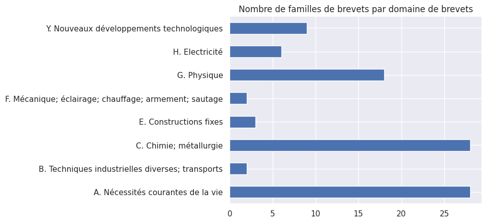

Brevets français pour la transition
écologique pour un développement soutenable
12 avril 2024
Julia GRANDHAY
Département Ingénierie et science des
données
SIES - MESR
Problématiques
-
Y a-t-il des brevets, où au moins une des parties est française, qui utilisent des
publications citées dans les rapports du GIEC et de l'IPBES ?
-
Quels sont les domaines couverts par ces brevets ?
- Qui dépose ces brevets ?
Les éléments clefs à retenir
Définitions
-
Famille de brevets : Une famille de brevets simple est une collection de documents de
brevets considérés comme couvrant une seule invention. Le contenu technique couvert par
les demandes est réputé identique.
Source Office européen des brevets
- Brevet publié
- Brevet octroyé
Méthodologie
-
Identification des brevets dans la base de données PATSTAT de l'Office européen des
brevets avec au moins une des parties, déposants ou inventeurs, localisées en France
depuis 2010
-
Collecte des DOI cités dans les brevets identifiés
-
Rapprochement des DOI présents dans la base PATSAT et dans la bibliographie des rapports
du GIEC et de l'IPBES
-
L'intégralité du code est disponible https://github.com/dataesr/harvest-patstat
Les références françaises dans la base PATSTAT
-
1 460 345 DOI uniques disponibles dans la base PATSTAT
-
Références françaises citées par le GIEC : 258 sur 53 258
-
Références françaises citées par l'IPBES : 151 sur 6 106
Les brevets publiés
- 50 familles de brevets uniques et 90 brevets publiés
- Augmentation du nombre de brevets publiés faisant références aux publications cités dans les rapports du GIEC et de l'IPBES
- Domaines les plus couverts : A. Nécessités courantes de la vie et C. Chimie; métallurgie

Les brevets octroyés
-
Parmis les brevets publiés, 15 brevets octroyés dont :
- 8 français
- 7 européens

Les déposants des brevets
-
1 460 345 DOI uniques disponibles dans la base PATSTAT
-
Références françaises citées par le GIEC : 258 sur 53 258
-
Références françaises citées par l'IPBES : 151 sur 6 106